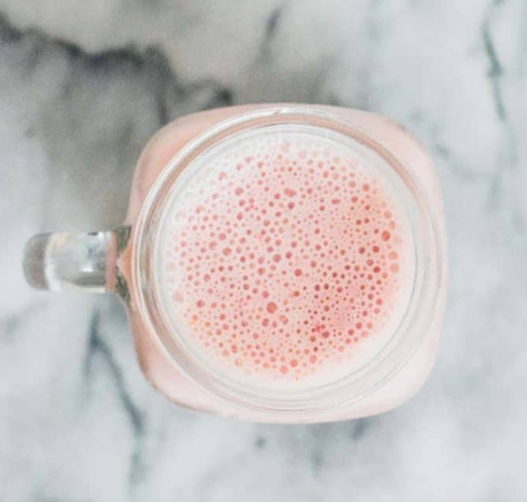

Strawberry Protein Shake Recipe

Ingredients
- 1/2 cup unsweetened almond milk
- 1/2 cup full fat greek yogurt
- 1 scoop vanilla protein powder
- 1 tsp raw honey
- 3-6 ice cubes
Instructions
- Starting with the almond milk, place all of the ingredients into the blender. Depending on the blender's settings, first start by chopping up the ice and frozen strawberries, followed by pureeing the mixture to create a smooth, even consistency.
- In order to get your preferred consistenc, you can also start by not adding any ice, following the other steps above. Once all other ingredients are mixed together, slowly add the ice, mix and then test. Continue to add more ice cubes until the desired consistency is met.
- If too thick, you can add some more almond milk, little by little. If not sweet enough, add a little more honey.